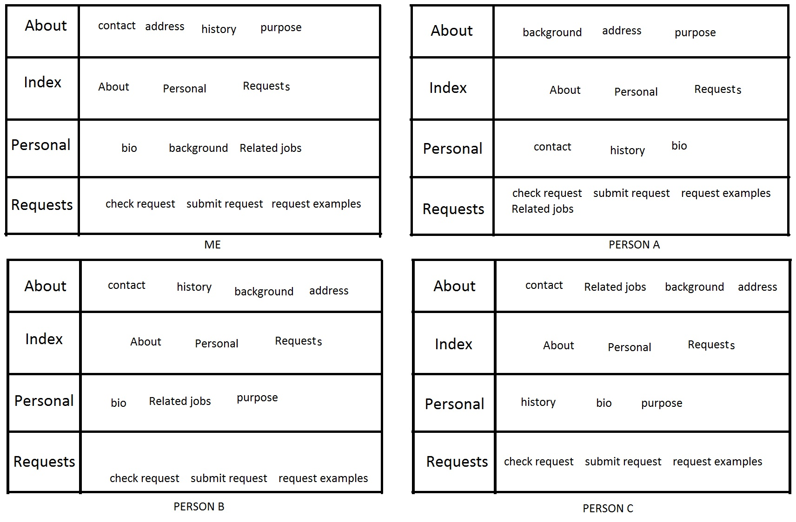

During the sort, one word was placed on each card and given to participants to put in pre-written categories. These categoies consisted of About, Index, Personal and Requests. Each participant had various matches for each word in each category. No participant placed the content in all the same categories.
The sort differed slightly from that of the current site category organization. Each participant had their own view on what content hould go in what category, but for some content all participants put it in the same category. For some content, the content I thought should go in one category, was chosen to go in a different category by all participants. That leaves me to think that the content should go in the opposing category that all other participants picked. Overall, most content was sorted into similar categories across the board for participants.
